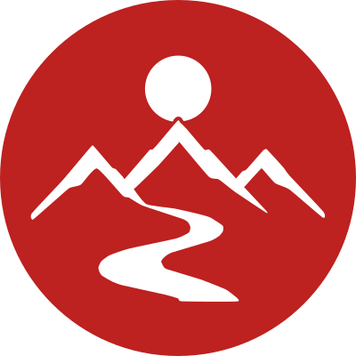

Dairesel profil amblemi
Instagram’ın yuvarlak profil kırpımı için tam taşmalı kırmızı zemin; mevcut kilitli amblemin güneş, dağ ve yol çizgileri beyaz olarak korunmuştur. Bu çalışma onay bekleyen adaydır; mevcut kilitli dosya ve set değiştirilmemiştir.

Profil ölçeği · 220 px
Kullanım amacı: yalnızca kare sosyal profil fotoğrafı/avatar. Ana kilitli logo yerine geçmez. Kırmızı: #BD2120 · İç sembol: beyaz.